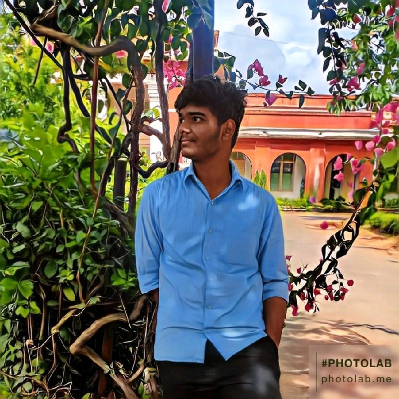

My Journey in Tech: From Competitions to Education
I've always been fascinated by the world of technology. It's a realm where innovation knows no bounds, and I've had the privilege to dive deep into this fascinating world during my educational journey. In this blog post, I want to share some of the highlights of my tech journey, from competitions to education.